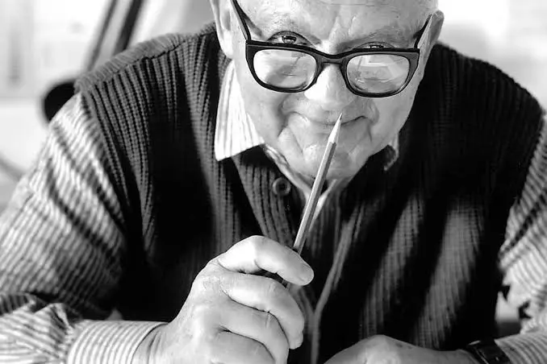

Biografía y Comienzos
Paul Rand (nacido como Peretz Rosenbaum) fue un visionario que abogó por un diseño que fuera estético y funcional. Su enfoque, influenciado por el *Modernismo europeo* y el movimiento *Bauhaus, buscaba la claridad y la sencillez. En 1937, se convirtió en director de arte de la revista *Esquire, un puesto que le permitió experimentar y establecer su reputación antes de la explosión del diseño corporativo.
Rand creía firmemente que el diseño no era solo una capa superficial, sino una forma de comunicación esencial. Su famosa frase era: "El diseño es la forma en que el significado se comunica de manera eficiente."
Obras Clave y Legado
Paul Rand es quizás más conocido por sus *identidades corporativas* atemporales. Sus logotipos no solo eran modernos, sino que captaban la esencia de la empresa con formas mínimas.
Logotipos Icónicos
- *IBM* (1956) - Un diseño de rayas horizontales que sugiere velocidad y eficiencia.
- *UPS* (1961) - El famoso paquete con el lazo atado.
- *ABC* (1962) - El círculo simple que aún se utiliza hoy en día.
- *NeXT* (1986) - Creado para Steve Jobs, una obra de arte tipográfica.
Su Filosofía: Juego y Racionalidad
Rand veía el diseño como un proceso de síntesis. Combinaba el juego visual de la fantasía (similar al estilo de Klee o Miró) con la funcionalidad racional del diseño suizo. Defendía que un buen diseño debe ser conceptual, no meramente decorativo.
"Todo es diseño, ¡todo!" - Paul Rand.